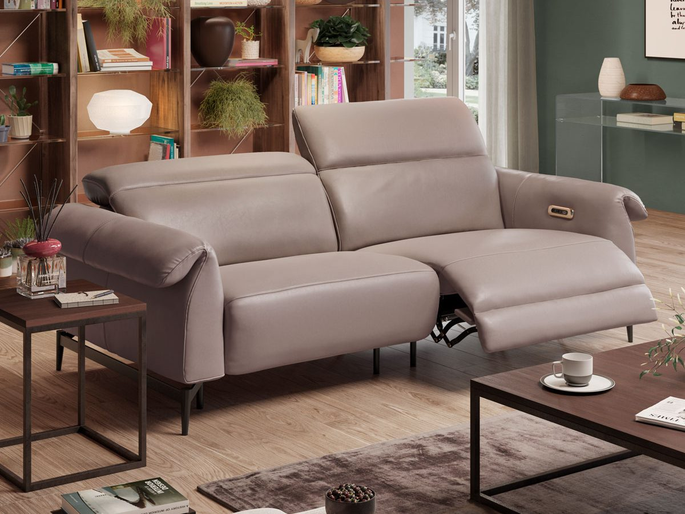
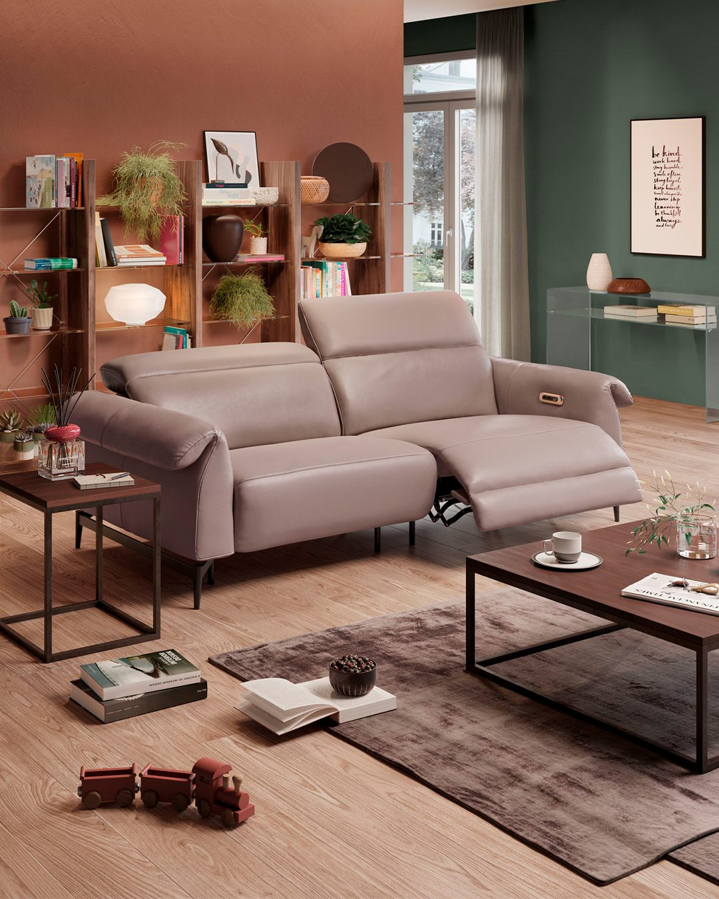
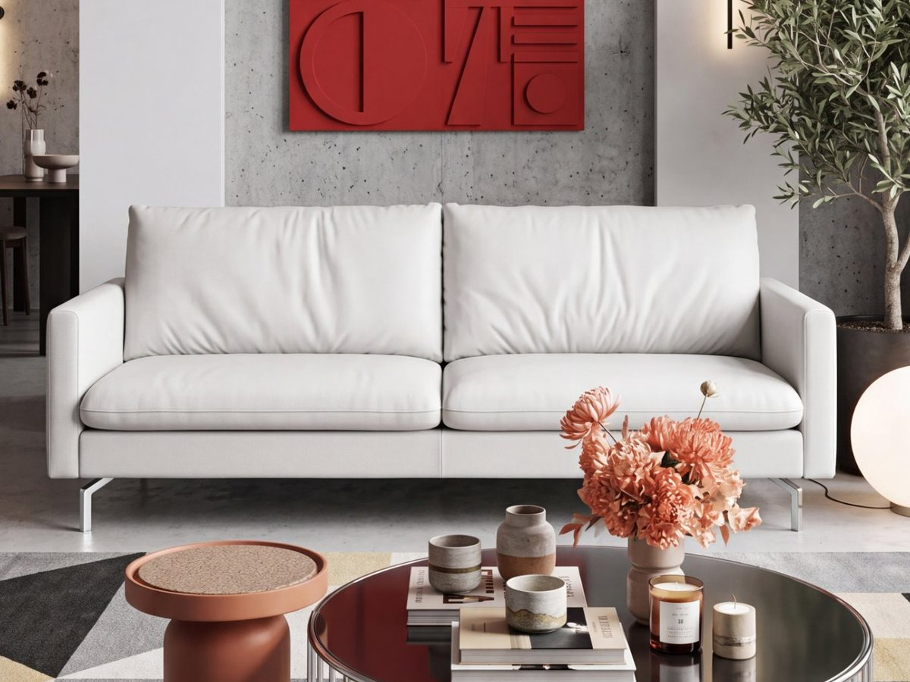
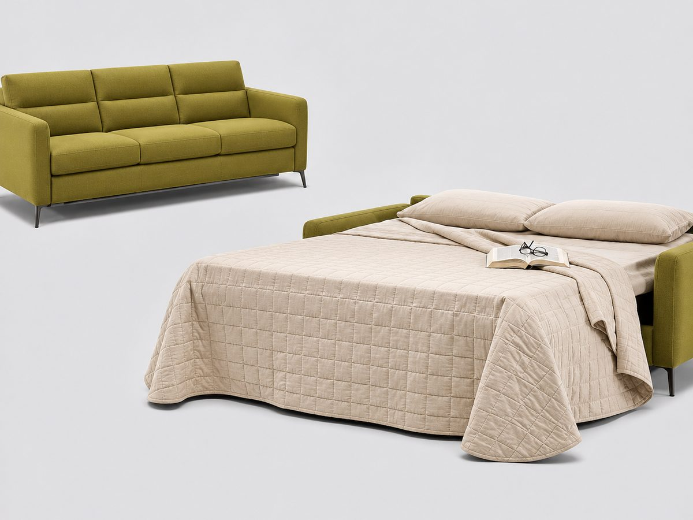
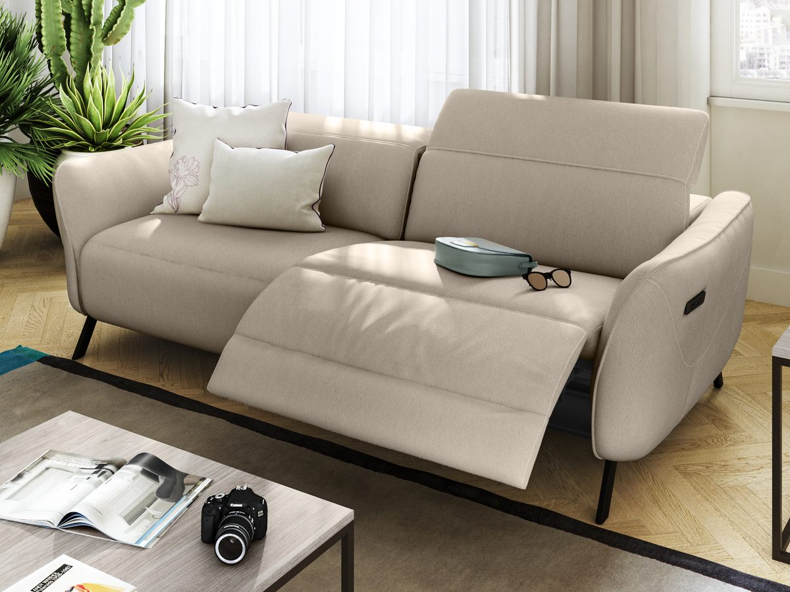
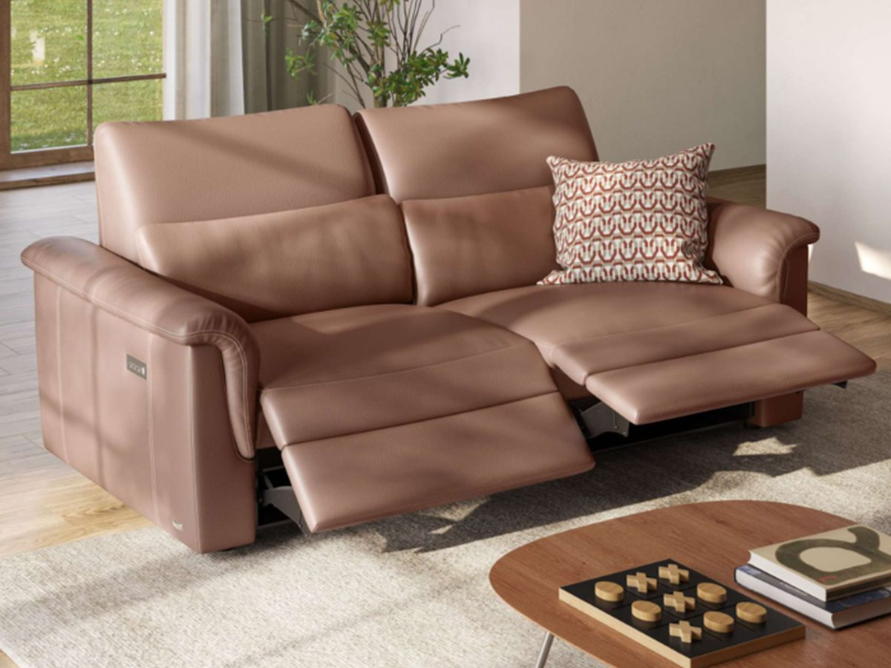
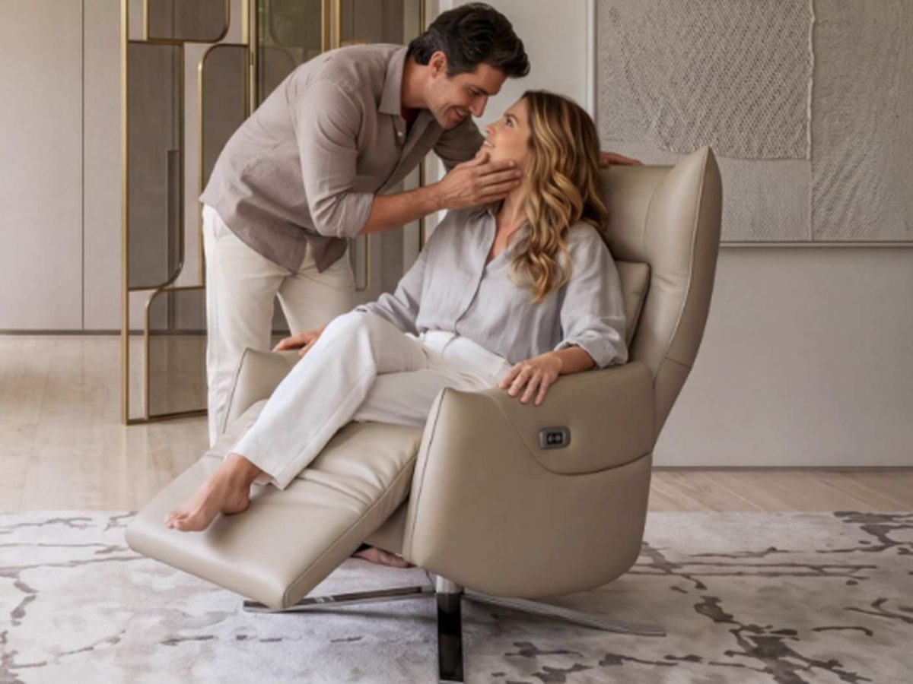
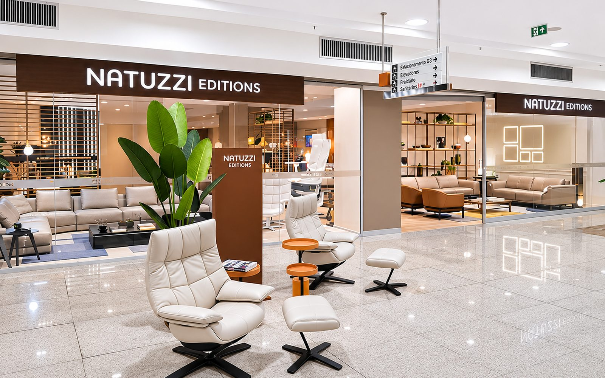

Sofá
Leggiadro
A forma da leveza: braços em formato de asa sobre uma base de pontes metálicas pretas. Opção com relax para ajustar apoio de cabeça e de pés.
Quero conhecer →NATUZZI EDITIONS · CASA E GOURMET BOTAFOGO
Sofás, poltronas e camas com design nascido na Puglia, no sul da Itália, e pensados para o conforto de todos os dias. Venha sentir cada peça no nosso showroom.

Desde 1959
Uma história de família italiana
Puglia, Itália
Onde a marca nasceu e cresceu
Feito à mão
O saber fazer de artesãos
A marca
Tudo começou em 1959, na Puglia, com Pasquale Natuzzi e uma pequena oficina. De lá para cá, a Natuzzi se tornou uma das referências mundiais em estofados de design italiano.
Natuzzi Editions é a linha do grupo que traduz essa herança em peças contemporâneas e versáteis, feitas para a vida real: receber os amigos, assistir a um filme, descansar no fim do dia.
Um sofá não é só onde você senta. É onde a casa acontece.
Por que Natuzzi Editions
Assentos, encostos e apoios de cabeça ajustáveis, com opções de mecanismo relax, para cada pessoa encontrar a sua posição.
Uma cartela ampla de cores e acabamentos, para que a peça converse com o seu ambiente e com o seu estilo.
O saber fazer italiano em cada costura, cada curva e cada acabamento. Qualidade que você percebe ao primeiro toque.
Destaques

Sofá
A forma da leveza: braços em formato de asa sobre uma base de pontes metálicas pretas. Opção com relax para ajustar apoio de cabeça e de pés.
Quero conhecer →
Sofá · 2 lugares · poltrona
Pureza de linhas em formato quadrado, com assento amplo e pés metálicos cromados. Um clássico contemporâneo para a sala de estar.
Quero conhecer →
Sofá-cama
O melhor do sofá e da cama em uma só peça. Abre em apenas 5 segundos e revela um colchão de espuma viscoelástica.
Quero conhecer →
Sofá modular
Assentos largos e braços finos e arredondados. Apoio de cabeça ajustável e opção reclinável elétrica Dual Power, com pés em metal preto.
Quero conhecer →
Sofá
Amplo e acolhedor, com encosto alto e braços largos. Opção Triple-Motion: assento, encosto e apoio de pés elétricos em cada lugar, com entrada USB.
Quero conhecer →
Poltrona Total Relax
Linhas envolventes com base giratória e apoio lombar. Encosto e apoio de pés se ajustam separadamente, para a posição perfeita de descanso.
Quero conhecer →O showroom
Nenhuma foto substitui a sensação de sentar, reclinar e tocar o couro. No nosso showroom você tem tempo, espaço e um atendimento dedicado para escolher com calma.

Escolha o melhor dia e horário pelo WhatsApp e seja recebido com atenção exclusiva.
Sente, recline e compare. Descubra o nível de conforto ideal para você e sua família.
Defina módulos, revestimentos e cores com a ajuda do nosso time.
Traga as medidas do seu ambiente e saia com a composição certa para a sua casa.
Visite